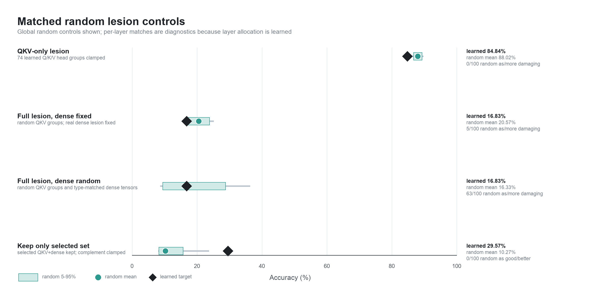

Lesion the route. Keep the lesion fixed. Change what may adapt.
Use the stages or press play. Select a recovery pathway at stages C–D. The schematic encodes parameter status; animated flow is illustrative, not measured activation flow.
Stage A
Learn a sparse task-sufficient configuration
94.98%POS accuracy
Schematic. Columns represent Q, K, V, attention-output, FFN-intermediate, and FFN-output projection masks. Q/K/V marks are 64-wide input-feature groups, not conventional attention-head-output ablations. Marks summarize real layer-level gate statistics; they are not neurons or causal activation paths.
Empirical gate map
Inspect a layer
Choose a BERT layer to compare the measured baseline and damaged gate sparsity. The permanent lesion never reopens.
Why readout-only recovery matters
The representation can stay damaged while the interface learns how to read it.
Readout-only recovery changes the 17-way linear POS classifier and nothing inside the encoder. Accuracy rises from 16.82% to 80.00% while the hidden-state representation remains exactly unchanged.
Empirical representation explorer · primary seed 42
Loading empirical states…— full dev · — balanced panel
PC1 and PC2 are the two highest-variance directions in the intact core model’s 768-dimensional final hidden states. The same 816 POS-balanced tokens appear in every state. The frozen basis and fixed axes make coordinates comparable. The view shows 23.32% of total variance; it is neither a POS axis nor the classifier boundary. Blue circles are correct predictions; red crosses are errors.
Readout-only contrast · primary run
0.4336CKA to core
1.0000CKA to damage
Damaged + unchanged core readout16.82%
same hidden states → new linear map
Damaged + retrained readout80.00%
The actual comparison uses the same ordered 25,147 development tokens and their raw 768-dimensional final hidden states. No independent 2D embedding is compared.
Linked results explorer
Performance and representational return are related—but not interchangeable.
Primary-run endpoints
Accuracy vs. CKA to core
Higher and farther right means more accurate and more core-like—not more “recovered circuitry.”
Robustness
Five seeds preserve the ordering
Individual runs are shown; the line spans the observed minimum to maximum. With five seeds, these are descriptive—not confidence intervals.
Explore the evidence
Inspect gate structure and per-tag recovery
Switch views and conditions to inspect the exported measurements directly. Values are inactive-gate percentages or POS accuracy relative to the core baseline.
Controls and limits
What the lesion establishes—and what it does not.
74
Q/K/V input groups
The learned Q/K/V-only lesion reaches 84.84%, versus a random mean of 88.02%; 0/100 random lesions were as damaging.
18
Dense projection gates
The severe main lesion additionally clamps 5 attention-output, 9 FFN-intermediate, and 4 FFN-output projection masks.
63/100
Random full lesions
When Q/K/V and dense targets are both randomized, 63/100 are as or more damaging. The exact full target set is not uniquely causal.

The Q/K/V-only control and the main Q/K/V+dense lesion are different experiments. The recovery study remains a test of adaptation after a severe structured lesion.
Scope of the claim
One backbone: bert-base-uncased.
One supervised task: 17-way POS tagging on UD English-EWT.
A learned linear task readout, not BERT’s native language-model output.
Recovery depends on which components are permitted to adapt.
No direct evidence about biological lesion or recovery mechanisms.